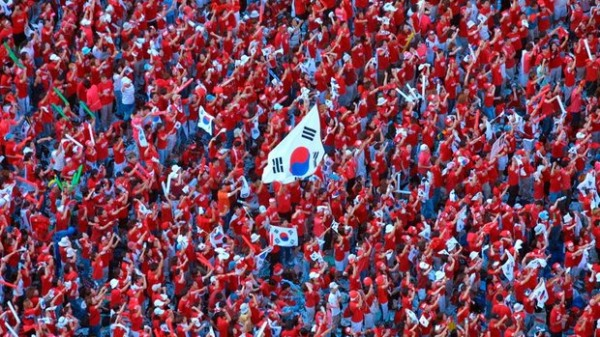
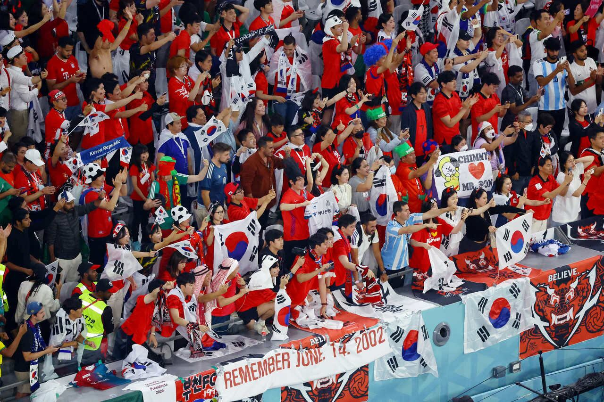

Coreia do Sul
A história da Coreia do Sul nas Copas do Mundo é a mais vitoriosa e consistente entre todas as seleções do continente asiático. Os "Guerreiros Taegeuk" deixaram de ser coadjuvantes para se tornarem uma presença carimbada e respeitada no torneio.
Seleção
HISTÓRIA
A melhor Copa
do Mundo
Coreia do Sul
A caminhada do "Milagre Vermelho" (como ficou conhecida em 2002) só parou na semifinal diante da Alemanha. Além do resultado em campo, aquela Copa ficou marcada pelo "Mar Vermelho": milhões de torcedores lotando as ruas de Seul e de outras cidades em uma das festas mais bonitas já vistas no futebol.
2002
O auge da Coreia do Sul em Copas do Mundo aconteceu em 2002, quando alcançou as semifinais em casa. Na estreia, venceu a Polônia por 2 a 0 diante de uma torcida em êxtase, empatou em 1 a 1 com os EUA e derrotou Portugal por 1 a 0, garantindo a vaga nos mata-matas.
2010
Apesar da eliminação dolorosa nas oitavas, o torneio foi considerado um sucesso absoluto na Coreia do Sul. Pela primeira vez na história, o país avançou de fase em uma Copa do Mundo realizada fora do continente asiático.


Momentos inesquecíveis
01
Apesar de quase 50 anos de participações, a Coreia do Sul só foi quebrar o tabu e conquistar sua primeira vitória em Copas do Mundo em 2002, quando derrotou a Polônia por 2 a 0 na estreia, com gols de Hwang Sun-hong e Yoo Sang-chul.
02
Oito anos depois, na África do Sul 2010, a seleção mostrou que também era capaz de brilhar longe de casa ao alcançar as oitavas de final pela primeira vez fora de seu território. Na ocasião, estreou com vitória sobre a Grécia por 2 a 0, gols de Lee Jung-soo e Park Ji-sung, foi derrotada em seguida pela Argentina por 4 a 1, mas garantiu a classificação com um dramático empate em 2 a 2 com a Nigéria.
03
Na última rodada da fase de grupos na Rússia, a Coreia do Sul protagonizou uma das maiores zebras estatísticas do futebol. Mesmo já eliminada, a equipe venceu a então campeã mundial Alemanha por 2 a 0.
04
Nas oitavas de final, após um jogo extremamente tenso, Ahn Jung-hwan marcou de cabeça na prorrogação, decretando a vitória histórica por 2 a 1 e eliminando a poderosa Itália.
Detalhes
culturais do país